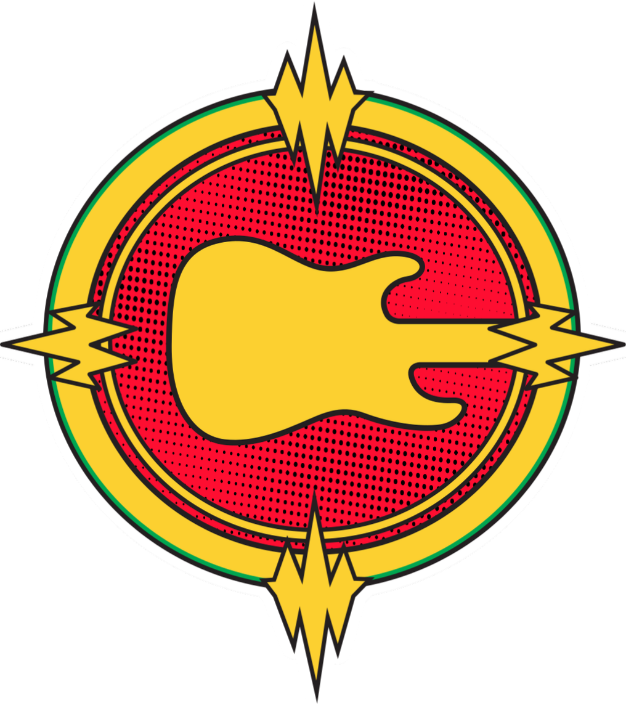
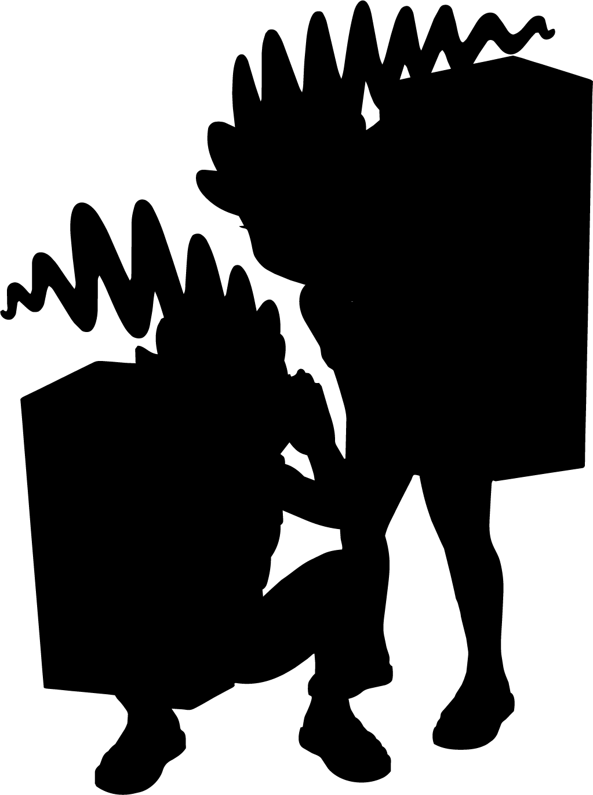

SuperSonoros
A liga dos artistas da Guitarríssima. Ser único é o seu superpoder. Aqui, nenhum músico nasce herói: a jornada é forjada em cada acorde, em cada escolha.

A liga dos artistas da Guitarríssima. Ser único é o seu superpoder. Aqui, nenhum músico nasce herói: a jornada é forjada em cada acorde, em cada escolha.
"Pra que arriscar? É bem mais fácil ser idêntico ao original!"
Ele convence você a abrir mão da sua voz para ser apenas um eco. O herói vence quando tem a coragem de assumir sua própria história.

"Toque mais alto! O importante é todo mundo ouvir só você!"
Uma disputa que destrói a harmonia do grupo. Vencer exige generosidade: escutar quem está ao seu lado para construir música de verdade.

"Acertou uma vez, já chega! No palco a sorte resolve!"
O inimigo que promete facilidade e entrega despreparo. O herói o derrota com o Repeteco: repetir com atenção até conquistar domínio real.

"E se você errar na frente de todos? Melhor não tocar..."
Ela vive no instante anterior. Coragem não é a ausência de frio na barriga, é dar o primeiro acorde apesar dele.
Cada ensaio desenvolve um superpoder na sede da Guitarríssima.